How to play Penguin Slider
After launching the game, i.e. after clicking the START button on the game's home screen
you'll see a short intro to the Penguin as he glides across the snow.
Once the Penguin intro is over, you'll be able to control him throughout the game.
1- Press the "Up" button on the console to make the penguin jump
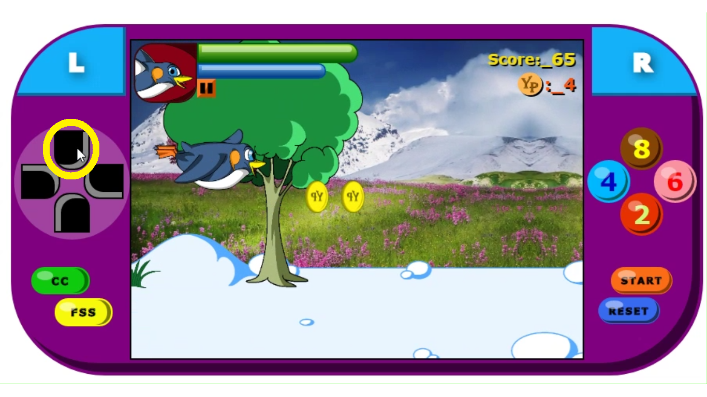
2- When faced with an obstacle, you have several options for defending yourself
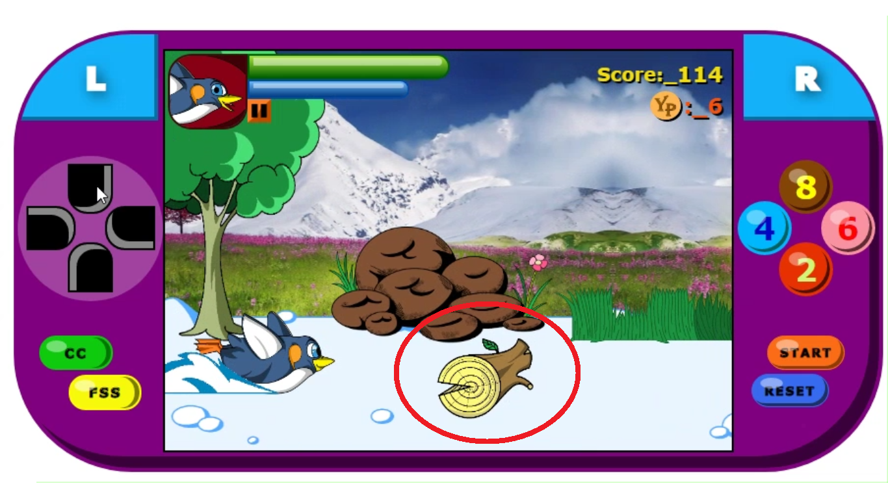
3- When faced with an obstacle, you can press the '4' key on the console to become a phantom penguin.
But when you do this, you won't be able to control the penguin until it returns to normal
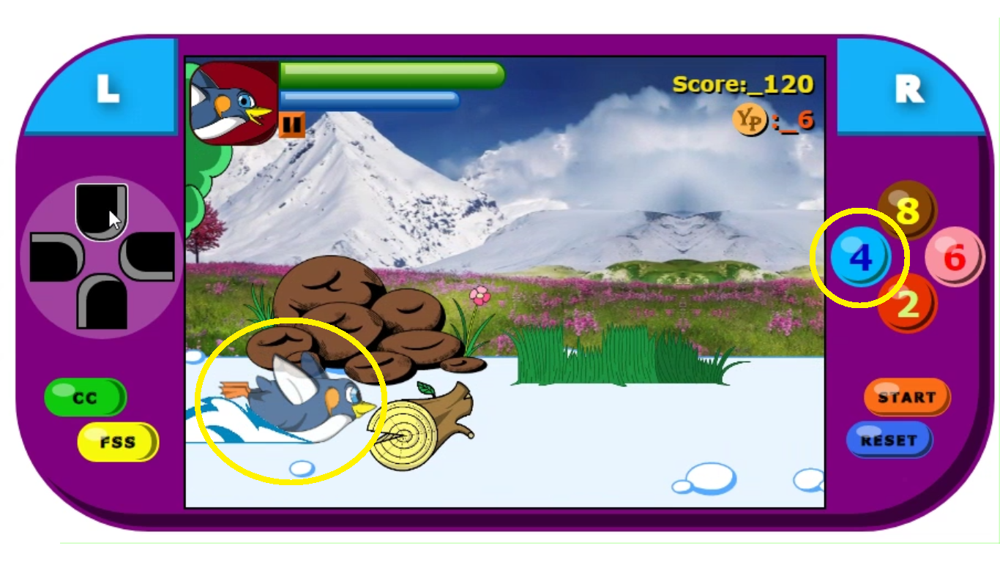
4- When you come up against an obstacle, you can press the '2' key on the console to throw a snowball
launch to destroy it. But this won't work with all enemies.
Note that all attacks launched in the game will use your 'blue' power
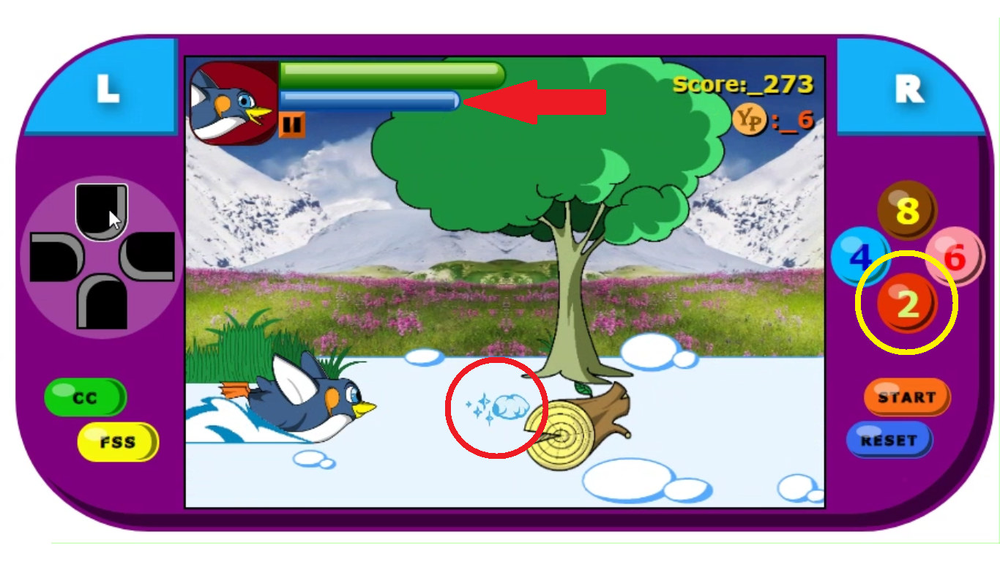
5- When you come up against an obstacle, you can press the '6' button on the console to become a ball
to destroy it. Note that this won't work with all ennemies
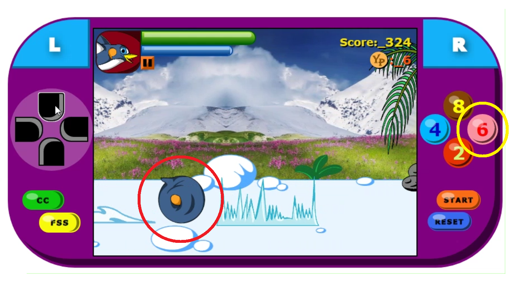
6- When you come up against an obstacle, you can press the '8' key on the console. This will
activate a shield that will protect you from all enemies, with the exception of two fearsome
enemies: the bear and the morse.
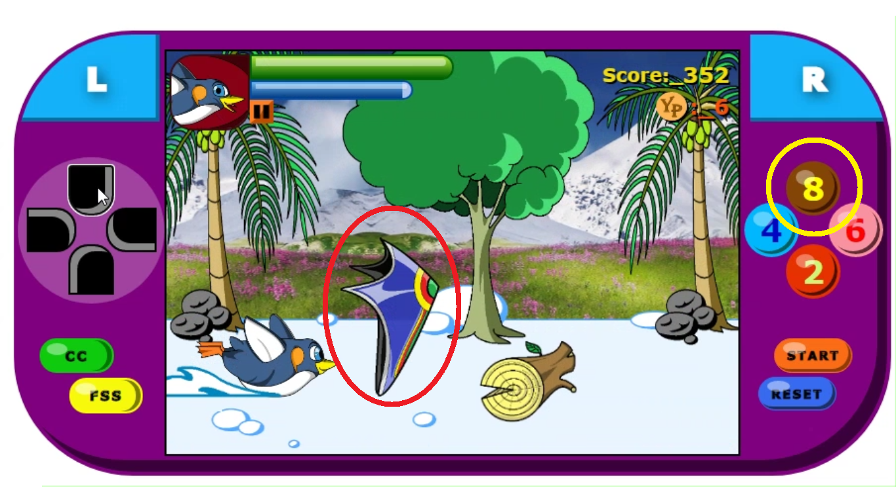
7- When you come up against an obstacle, you can press the 'L' key on the console. This will
activate your super1, which will destroy any ennemy, but will consume a lot of blue energy.
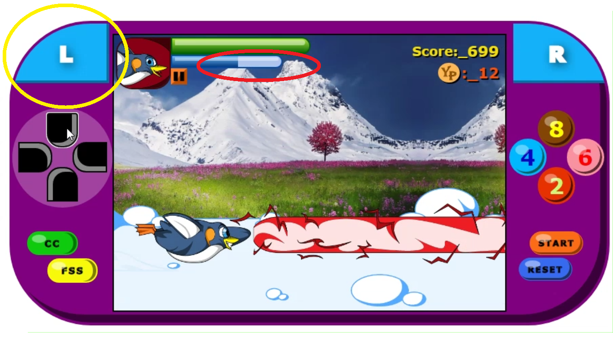
8- When you come up against an obstacle, you can press the 'R' key on the console. This will
activate your super2, which will destroy any ennemy, but will consume much more blue energy.
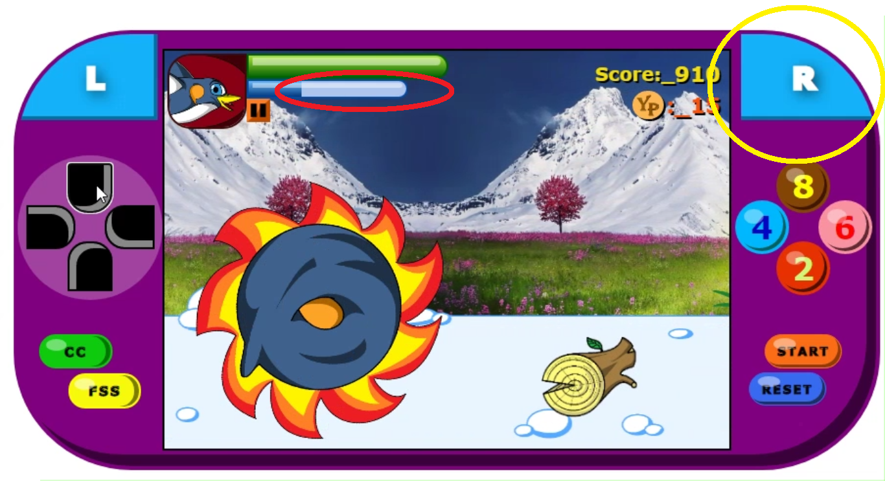
9- As soon as you see a small rocket pass by in the game, jump quickly to pick it up, as this
will allow you to earn a lot of yoya points that you can use later.
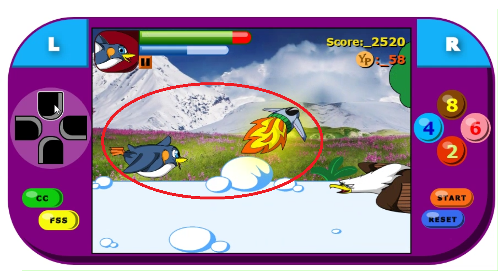
10- When you take the little rocket, you'll find yourself high in the clouds, and a little
penguin angel will come and give you random points.
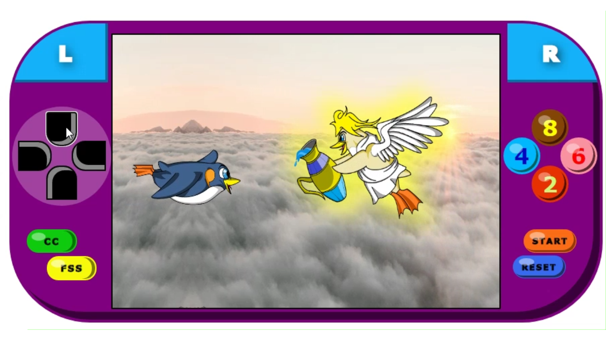
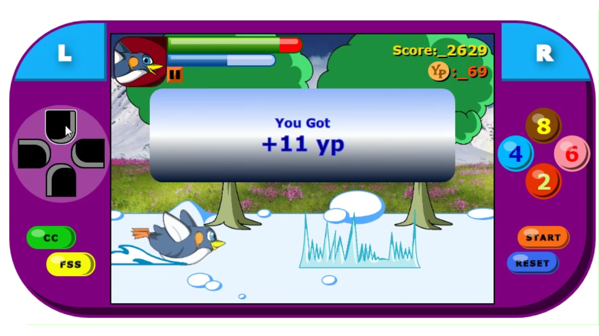